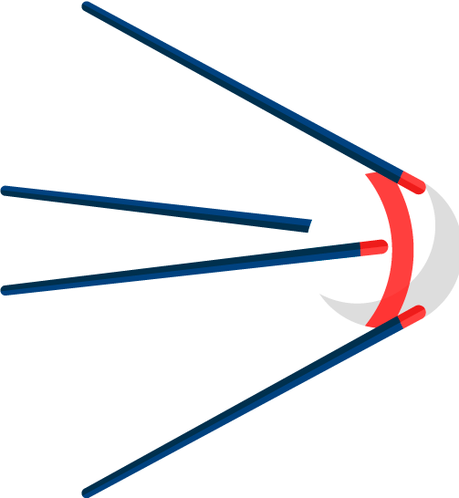
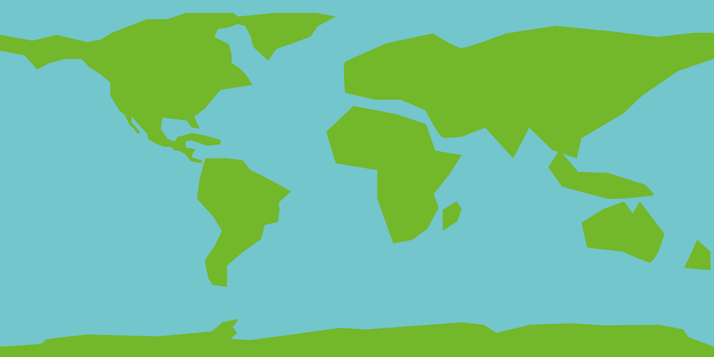
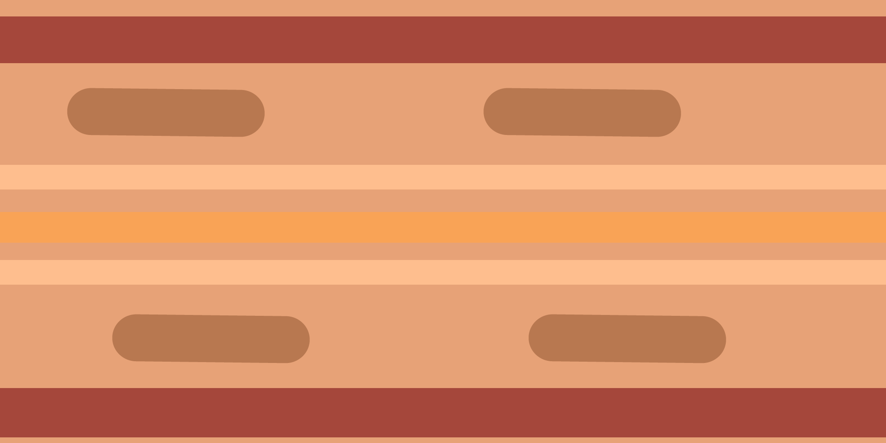

SISTEMA SOLAR
- 
- 

MERCÚRIO
-
Mercúrio é o planeta mais próximo do sol, o que faz dele muito quente, chegando a temperaturas de 427°C.
VÊNUS
-
Vênus, devido à alta pressão em sua atmosfera, que possui densidade 90 vezes maior do que a da Terra, chega a temperaturas de até 464°C.
TERRA
-
Terra possui diâmetro de 12.756 Km, levando exatos 365,256 dias para dar um giro completo em torno do sol.
MARTE
-
Marte possui atmosfera composta por dióxido de carbono (95,32%), muito seca e fria, o que justifica o fato de não possuir água na forma líquida.
JUPITER
-
Jupiter é um gigante gasoso, o maior planeta do sistema solar. Ele libera três vezes mais energia do que recebe do sol.
SATURNO
-
Saturno é o segundo maior planeta do sistema solar, famoso por possuir vários anéis constituídos de gelo, poeira e material rochoso.
URANO
-
Urano possui seu eixo de rotação inclinado em 82,5°. Sua atmosfera chega a temperaturas de -224C° e seus ventos alcançam até 900km/h.
NETUNO
-
Netuno é o último planeta gasoso do sitema solar, possuindo uma temperatura média de -116°C, onde a mínima pode chegar a -193°C.